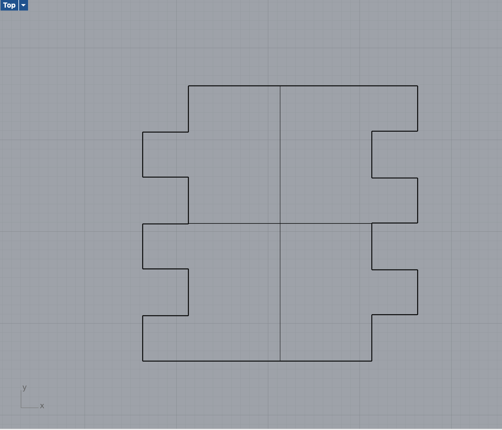
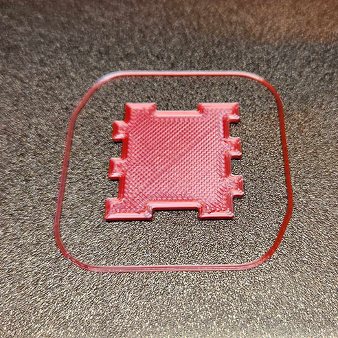
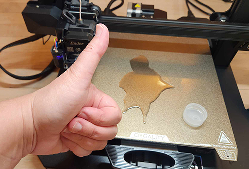

My first step this week was to get my own 3D printer to work! I left my on my road trip without being able to successfully print on my personal 3D printer. So, tackling that was the first step in this week’s project. Luckily, after watching and following the posted bed leveling YouTube videos, I was able to make the necessary adjustments to the gcode to get my bed to print correctly. A rabbit.. Success!
Next up was tackling the assignment and making a cube. I decided I wanted to go “simple” with this cube and did all 4 sides the exact same. So, they would fit into one another. This actually came up accidentally when I was testing the fittings of the pieces. I decided to have the tabs on one edge of the flat side of the cube, and the cutouts on the other side. This was just to test the fit and what adjustments needed to be made. In my first attempt, I started with a 5mm x 5mm tab / cut hole and did multiple instances to make sure the dimensions were correct.
I noticed that the first attempt, was nowhere near fitting. The tabs were too big and the holes were too small. I also printed the first attempt as 3mm thick, and it seemed excessive.
In my second attempt, I measured the printed tab size and the tab hole, and found the difference. From
here, I split the difference in half and used that measurement to adjust the tab/cut size of the hole,
giving a narrower tab and a wider hole.
I also adjusted the thickness of my walls to only 2mm thick. Then adjusted the boxes to cut from to
only 2.5mm wide to adjust for the new thickness of the walls. With my new measurements, I jumped to 5.5mm
wide of a (tab) hole. In this attempt, the walls actually fit together “perfectly”. As in, they were flush
and perfect, but had zero friction and did not stay together at all. Fail.
Finally, after 5ish attempts I got the right fit. I adjusted the hole cut size to 5.25mm. I’m not sure
what the tab size was exactly, as I was adjusting the cut hole and recentering it around the empty
space, controlling the cut hole, but not directly adjusting the sizing for the tabs themselves.
A measurement of 5.25mm snapped together perfectly and a nice fit.
I went ahead and added in the top and bottom holes, and went for it. I figured at this point it would be easy to simply adjust the 1 setting for the top / bottom panel if any adjustments needed to be made.
Next, I created the top / bottom panels. Of course, the fit wasn’t quite right and was a bit too tight.
I adjusted the tab size, and on my 2nd attempt it was a perfectly tight fit. It snapped together with a
bit of force.


Alcohol wipes are NOT enough to clean the bed and have any usefulness. I used the little swabs and got zero
adhesion results from the swabs. I even (once) tried glue, and still it did not fix the adhesion issues
I was having! Finally, I said, well, I’ll try a whole bottom cap full of rubbing alcohol and see if that
helps. It did indeed fix my adhesion problem. It might be overkill, but from that point forward, I was
using a full bottle cap before EVERY single new print!
Turning the nozzle heat up to 208 degrees also helped my project. I was having problems with the item
started well on the bed, then after many layers, it would slide around and no longer stick to the bed.
Adjusting the nozzle a little combined with the cap full of rubbing alcohol seems to have stopped this
issue… crossing my fingers it keeps that way!
Eva - For moral support and convincing me to stick with 3D printing vs trying to learn the CNC
after a long and mentally exhausting week.
René - For posting the YouTube videos on how to level the beds. This helped sooooo much!!